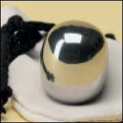
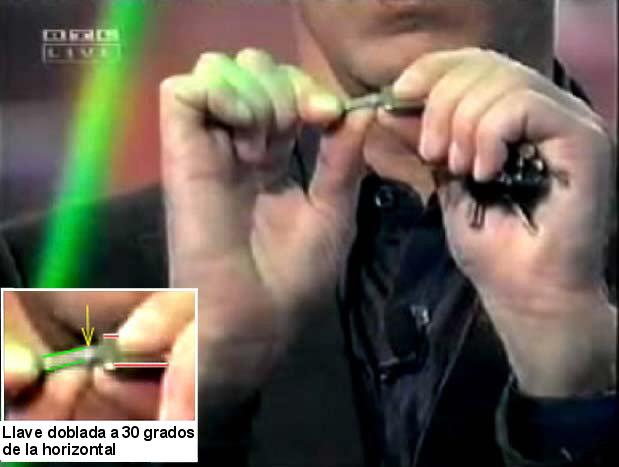

Huevos extraterrestres a la venta
Me cuenta un lector danés que el huevo extraterrestre de la semana pasada que tiene tan fascinado a Uri Geller puede comprarse en una versión de acero inoxidable por unos US$ 20 en el sitio web http://www.bahne.dk/store.asp?intCurrentCount=0&intProviderId=6&intProductId=310. ¡Deberíamos haber asumido que los extraterrestres también producirían versiones más durables y elegantes que una de simple latón!
He estado recibiendo informes de la forma en que Geller ha contado distintas versiones de la historia de la recepción de John Lennon de la superelipsoide de latón, así que parece que su “memoria fotográfica” puede empezar a tener huecos.
Ya que estamos en el tema, un lector de Alemania se refirió a la aparición reciente de Geller (el 14 de noviembre) en la televisión alemana. No tuve tiempo de examinar toda esa cinta aún, pero Geller parece estar haciendo la misma vetusta serie de demostraciones: mover la brújula (http://www.randi.org/jr/12-29-2000.html y http://www.randi.org/jr/01-26-2000.html), “Kinesiología aplicada”, el truco del levantamiento (http://www.randi.org/jr/05-15-2000.html), doblado de cucharas (¡por supuesto!) y luego doblado de llaves. Aquí encontramos un momento encantador, un punto en el que al señor Geller sufrió un sobresalto cuando ocurrió un evento bastante inesperado. Eligió una llave de un puñado de llaves prestadas, y le pidió a un participante del programa que la sostuviera entre sus manos, diciendo:
Aquí hay una llave. Intente… usted es fuerte… intente doblarla con sus manos. Es imposible, ¿verdad? Es imposible. ¡No! ¡Las llaves no se pueden doblar!
En el momento de emitir el segundo “imposible”, ¡Geller ve con horror que el hombre la ha doblado visiblemente! Se puede ver claramente eso en el video en un breve acercamiento máximo. Examine el cuadro del video que mostramos aquí, en el cual verá (inserto abajo a la izquierda) una vista aumentada en la cual he acentuado la dirección del cuerpo de la llave en línas rojas y la dirección de la espiga de la llave en líneas verdes. El punto de apoyo de la flexión, por supuesto, está entre los dos dedos de apoyo del hombre, donde se aplica la fuerza. Esto se indica con la flecha amarilla.
Geller le arrebata las llaves al hombre sorprendido, y extravía esa llave en la docena o así que tiene en el conjunto, busca para elegir otra, y se dirige a otro participante; ¡no sería razonable usar la misma llave o la misma persona, quien podría decidir mencionar que él había doblado fácilmente esa llave! Geller entonces hace exactamente lo mismo que ha hecho incontables veces antes (vea http://www.randi.org/jr/070904that.html#12). Mientras dobla físicamente la llave entre sus dos manos, con los hombros encorvados y aferrándola con firmeza mientras el dueño se encuentra directamente tras él, declara:

Insisto, ¡las llaves no se pueden doblar!
Él dobla la llave cuando dice doblar. Inmediatamente, le muestra la llave a la cámara, exhibiendo una leve torcedura.
Cuando tenga tiempo de observar y evaluar todo el programa, informaré aquí sobre otros apasionantes descubrimientos…
Bastante obvio
El lector Jerry Shaver revela aún más sobre la “psíquica” Char Margolis (mencionada aquí la semana pasada) y cómo ella se arriesga menos que la mayoría haciendo que sus métodos sean más obvios:
Acabo de leer su comentario sobre Char Margolis y salí a pescar en su sitio web. Encontré algunos consejos interesantes… si quiere desperdiciar US$ 500 y una lectura por teléfono de ella. Pegaré el texto a continuación, pero también puede accedérselo en http://www.char.net/Pages/Readings.html
Cómo prepararse para una lectura
Si hizo una cita, para una lectura telefónica y nunca tuvo una lectura conmigo antes; aquí hay varias sugerencias que lo ayudarán a estar preparado.
Por favor asegúrese de tener un bloc de notas y un bolígrafo o un lápiz para tomar notas. Por su propio beneficio, los intentos de grabar en cinta son muy distrayentes y Char no quiere ninguna interrupción en su lectura. Así que Char le pide que no grabe la lectura.
Por favor haga una lista de sus preguntas prioritarias. Char le dará tiempo al final de su lectura para hacer nuevas preguntas, o bien obtener aclaraciones de algo que se haya dicho durante la lectura.
Asegúrese de hacer una lista de los nombres y apodos de personas que ya hayan fallecido así como de personas con las que actualmente está conectada, como familia, amigos o asociados de negocios.
Char normalmente empieza su lectura dando iniciales de personas. Con frecuencia la gente está nerviosa o inquieta y no contesta. Tener su lista frente a usted le ayudará a responder sí o no.
Relájese y disfrute la lectura personalizada de Char. Será una experiencia asombrosa.
¿Sin grabaciones? ¿Hacer una lista de preguntas? ¿Hacer una lista de nombres? ¿Iniciales? ¿Ayudará si usted responde “sí” o “no”? ¿Quién está haciendo el trabajo aquí? Supongo que por eso falla tan miserablemente en el programa de Larry King… los que llaman no se han “preparado” bastante bien.
Y Jerry, no entiendo por qué grabar la sesión puede ser tan “distrayente” y producir “interrupciones”. ¡Simplemente conecte la grabadora, enciéndala, y siéntese tratando de ajustar las adivinanzas de Char a la lista de personas que ha preparado!
Los métodos de Sylvia Browne
Al menos Sylvia Browne le envía al cliente una cinta de audio de su lectura telefónica de US$ 750… lo cual, según parece, no es una buena idea desde su punto de vista. Aquí hay unos pocos extractos de sólo dos de esas lecturas (las únicas dos que hemos podido obtener hasta el momento) aunque estamos buscando más. El aspecto “prefabricado” de estas lecturas es muy obvio, creo yo.
Usaremos dos tipos de letra aquí. Para la lectura de marzo de 2004, usaremos un tipo de letra normal, y para la anterior de Septiembre de 2002, itálicas. Recuerde que hay más de un año y medio entre ambas, y aún así las similitudes son evidentes. La lectura más temprana se hizo para una mujer de Francia, la otra para una mujer de EE.UU. ¡Es asombroso que ambas personas, separadas por gran distancia y tiempo, tengan necesidades y características tan similares! Estos extractos están tomados directamente de transcripciones muy exactas que hemos preparado a partir de las cintas.
SYLVIA BROWNE: … lo único que quiero que haga, es que cuando le describa algo, y seré muy específica, me diga si ya ha sucedido o no. No significa que no pueda volver al pasado, pero preferiría ocuparme del presente y del futuro.
CLIENTE: Excelente. Muy bien.
SYLVIA BROWNE: Y si hablo muy rápido, hágame parar. Y le diré todo, malo, bueno, le advertiré, la aconsejaré, pero no controlaré su vida. Porque, como sea, eso queda entre usted y Dios.
SYLVIA BROWNE: Y lo único que quiero que haga es que cuando le describa algo, y seré muy específica, me diga si ya ha sucedido o no. No significa que no pueda volver al pasado, pero preferiría ocuparme del presente y del futuro.
CLIENTE: Bueno.
SYLVIA BROWNE: Y si hablo muy rápido, hágame parar. Y le diré todo, malo, bueno, advertencias. La aconsejaré, pero no controlaré su vida. Usted sabe, porque, como sea, eso queda entre usted y Dios.
SYLVIA BROWNE: ¿Qué le pasa con su estómago superior, su baja espalda, y los dolores de cabeza frontales?
CLIENTE: Oh Dios mío. (Ríe nerviosa.) Eh, bien, yo… mi espalda es un desastre.
SYLVIA BROWNE: ¿… qué le pasa con los dolores de cabeza y el estómago y la baja espalda?
CLIENTE: Eh… bien. Estuve teniendo dolor en la baja espalda…
SYLVIA BROWNE: Quiero que todos los días en la cama haga entre 15 y 20 abdominales que no… y no en el piso, ¿eh? en la cama…
SYLVIA BROWNE: … yo empezaría haciendo algunos… eh… abdominales, ya sabe, en la cama.
SYLVIA BROWNE: … quiero que tome 2400 miligramos al día de lecitina y compruebe en una semana cuánto mejora. L-e-c-i-t-i-n-a.
SYLVIA BROWNE: … entonces yo empezaría a tomar algo de lecitina. Sí, l-e-c-i-t-i-n-a.
CLIENTE: Ajá. ¿Y eso para qué es?
SYLVIA BROWNE: Eso es bueno para tu espalda, querida. Aliviará tu espalda y tu cuello, y todo. Es un, eh, lubricante natural.
SYLVIA BROWNE: Y, verás, no estás recibiendo nada de aceite en tu sistema… Ya sabes, dices, ¿por qué estoy crujiendo por aquí? Sí… cruje y se parte y, claro, pero verás, no hay aceite… Quiero que, por un tiempo al menos, no comas lácteos y dejes de tomar gaseosas y cafeína… porque tu estómago se está poniendo muy ácido.
SYLVIA BROWNE: Ya ves, no estás recibiendo nada de aceite en tu sistema… Sí, y ¿quién va por ahí, sabes, bebiendo aceite todo el tiempo? Sí, pero yo dejaría los lácteos por un tiempo. ¿Sabes? Te va a dar mucha acidez. Y luego, también aumentaría las proteínas porque te estás deprimiendo y cansando, y esa es tu azúcar en sangre. Así que empezaría tratanto de comer más pollo, más pescado, cualquier cosa que tenga proteínas.
SYLVIA BROWNE: ¿Quién es el hombre de pelo oscuro con lindos ojos y con, eh, rasgos angulosos?
SYLVIA BROWNE: ¿…Quién es el de pelo más oscuro?
Randi comenta: Podría seguir y seguir con las comparaciones entre las dos lecturas, pero realmente necesito otras cintas de audio para completar el proyecto. Nota: Aquí vemos que Browne está dando diagnósticos médicos específicos para sus clientes, como hace en sus apariciones en televisión, algo para lo que no está calificada. Para tu información, Sylvia, la lecitina no tiene nada que ver con la espalda, es una fuente de vitamina B y un emulsionante natural de las grasas. Aparece en una amplia variedad de comidas, y casi nadie carece de este nutriente. En cuanto a las ideas curanderiles sobre el “aceite” en el sistema humano, ¡ella cree que la ingestión de aceite realmente servirá para la “lubricación” de las articulaciones! ¡Razona como un mecánico de garaje!
De esta breve selección de similitudes, podemos ver que los que pagan los US$ 750 por una lectura telefónica que dura menos de media hora están recibiendo al menos algún material de un discurso preparado que Sylvia parece usar como un artículo normal. Si alguno de ustedes que leen esto saben dónde puedo obtener otras cintas de audio de las lecturas de Browne, me encantaría preparar transcripciones exactas de ellas, como lo he hecho con estas dos. Y, por supuesto, todas las identidades serán absolutamente protegidas.
Cuando se les pidió comentarios sobre la calidad de las lecturas, ambas víctimas se mostraron muy descontentas.
A la mujer a la que se le hizo la lectura en 2002 se le dijo que ella y su mejor amiga se reconciliarían, que conocería a un interesante “hombre de pelo oscuro” ese verano, y que pagaría sus deudas. Sylvia le aseguró que obtendría un trabajo a fin de año, y que pasaría los exámenes de leyes que estaba por tomar. La preocupaba una situación desafortunada con su tío y su abuelo, y Sylvia le dijo que se resolvería. Informó, 18 meses después de la lectura, que:
Gasté US$ 750 en la lectura. En cuanto a las predicciones, mi ex mejor amiga y yo ya no somos amigas. Mis padres y suegros están bien, sin embargo, ella no predijo que en julio mi suegro necesitaría un triple bypass de emergencia. No conocí a un hombre de pelo oscuro durante el verano. Sigo endeudada porque todavía no tengo el trabajo que me describió obteniendo a fin de año. Acabo de dar el examen de leyes por segunda vez y no pasé. Mi tío y abuelo aún viven, pero su situación no ha cambiado.
La segunda lectura de 2004 no fue más satisfactoria para esa cliente. Se le pidió llenar y devolver un formulario que Sylvia le envió, y lo hizo así. Sylvia le preguntó:
¿Desearía usted que el contenido de esta declaración jurada se haga público, ya sea en un libro, serie de televisión, o película? (Nos pondremos en contacto con usted antes de tal uso.)
Ella respondió “Sí”, e incluso agregó: “¡Insisto en ello!”. Pero Sylvia nunca usó la declaración jurada. ¿Por qué? Vean la declaración:
Descripción de su experiencia:
Mi experiencia con Sylvia Browne fue similar, imagino, a la de los pobres pasajeros condenados del Titanic. Luego de esperar dos años, y habiendo pagado por adelantado (¡por supuesto!) me siento hundida en la vergüenza, la deshonra y finalmente en la ira con las aguas del disparate cerrándose sobre mi cabeza. Supe que me habían estafado, y por mucho dinero. Empezando con síntomas físicos que no tenía, pasando por referencias a “la persona con pelo oscuro” (soy negra; todas las personas que conozco tienen el pelo oscuro) hasta una nota especialmente absurda sobre una vida pasada en una tienda de sombreros para mujer, todo lo que me dijo fue falso y absurdo. E incluso intenté dar pistas, señales y guía; después de todo, había invertido más de US$ 700 y quería que tuviera razón. ¡No fue así! Sylvia Browne, la depredadora, debería avergonzarse. Lo único rescatable es la gracia que esta farsa le hizo a mis amigos. Y el hecho de que una revista importante ha aceptado publicar mi historia.
La historia fue publicada, y debe haber indignado a Sylvia Browne. Pero estoy seguro de que no le importa demasiado. Aunque esta mujer exigió un reembolso, y se le negó, Sylvia ya tiene el dinero, y llega más cada día de gente a la que se le aconsejará que consuma lecitina y haga ejercicios. Parece que las lecturas psíquicas se tratan de eso. Eso, y revelaciones estúpidas como ésta de Sylvia:
Usted siempre ha sido una entidad femenina… Ha sido una gitana, una indígena estadounidense, una princesa de la India, ha trabajado como alta sacerdotisa, estuvo casada con un granjero en Inglaterra que era herrero. Eh, usted nunca fue un hombre.
¿Eso vale US$ 750? ¿O siquiera US$ 2?
Un hombre cambiado
El lector Dave Kirkwood nos alegra el día:
Puede que recuerde que hace un tiempo le envié un email airado en relación con el “exorcismo” que presencié en [un programa de televisión]. Luego de que me calmé un poco, leí unas pocas entrevistas con el exorcizado, y llegué a la conclusión de que puede haber sido hipnotizado por Bob Larson, o al menos “influido” del mismo modo en que he visto a mentalistas realizar este truco.
Por favor perdóneme por parecer un poco irracional.
He vivido casi 42 años de mi vida creyendo cosas que ahora sé son cuentos de hadas, viví temiendo el infierno, el castigo divino, etc., mi matrimoio y mi familia casi se destruyeron por la influencia de un “brujo” y su bruja, una bruja blanca (¡no estoy inventando!), y he pasado los últimos cinco años tratando de reconstruir todo el daño que me causaron numerosas porquerías de la nueva era. Créame, es todo menos inofensivo.
Siento que le debo un millón de gracias, porque desde que descubrí el sitio de la JREF, usted me ha entretenido y me ha alentado para pensar críticamente sobre todo el extraño sinsentido que se me presenta cada día, y como resultado, ya no me persiguen condenaciones y demonios imaginarios. Luego de leer muchos libros que usted recomendaba escritos por Michael Shermer, Carl Sagan, Stephen Jay Gould y por supuesto usted mismo, ahora puedo dormir por la noche sin temor de que mi hija arderá en el infierno a menos que le presente un conjunto de conceptos y reglas inconsistentes que ningún ser humano pensante podría seguir jamás…
Me ha ayudado usted a recuperar mi vida y mi felicidad, y no puedo agradecerle lo suficiente. Espero que entienda de verdad la importancia de su trabajo, y la metamorfosis que se produce cuando se abren los ojos de alguien, especialmente luego de 42 años.
No sólo eso, su sitio web me parece divertidísimo.
Gracias, Dave, pero tengo que decirle que no se apela a ninguna “hipnosis” aquí. Lo que usted ha visto es simplemente histeria producida por creencias irracionales, y una necesidad de “seguir la corriente” con la acción. Sí, la víctima es sugestionable, y eso realmente ayuda, pero la mayoría de la gente (bajo coerción similar y con un trasfondo similar) reaccionará de esta manera.
Le agradezco su expresión de agradecimiento. Tales comentarios hacen que lo que hacemos valga la pena, y nos ayuda a seguir adelante. Los suscriptores y los donantes de la JREF son los que hacen que todo sea posible, y les agradecemos por su apoyo continuo.
Otro fraude médico
La lectora Monica Pignotti leyó la referencia que hice hace dos semanas a Kaiser Permanente Northwest (http://www.sindioses.org/randi/randi20041210.html#qui-n-le-paga-a-los-curanderos) y agrega esto:
Quería hacerle saber que hay una tercera forma de pseudomedicina que se practicó en las instalaciones de Kaiser en Hawaii por ya al menos cuatro años: Terapia de Campo de Pensamiento (TFT por su sigla en inglés). El nombre de Kaiser incluso fue incluido en un artículo sobre TFT de Caroline Sakai et al y se coló en una edición especial, no revisada por pares de la Revista de Psicología Clínica dedicada al TFT donde a sus proponentes se les permitió publicar artículos sin revisión por pares, los que luego fueron criticados. Soy un ex practicante de TFT y ahora soy un escéptico, luego de haber hecho un experimento controlado que refutó la premisa básica del TFT. Algunos de mis artículos sobre el TFT se encuetran aquí: http://www.geocities.com/health_index/thought_field_therapy.html. El artículo de Sakai de la Revista de Psicología Clínica sobre cómo ella usó TFT en Kaiser está disponible aquí: http://www.tftcenter.com/article1.html.
Dejan de lado el colocar la limitación de responsabilidad que la revista les exigió tener en el artículo, de que no hubo revisión por pares. La doctora Sakai es una persona muy persuasiva y ha convencido del TFT a muchos de los doctores anteriormente escépticos.
TFT afirma poder curar la mayoría de los problemas psicológics en minutos presionando con los dedos varios “puntos de acupresión” del cuerpo en secuencias específicas, y también hace grandes afirmaciones sobre condiciones físicas. El doctor Roger J. Callahan, el fundador de la Terapia de Campo de Pensamiento, afirma que es superior a la acupuntura y a la acupresión debido a esas secuencias especialmente obtenidas. Las secuencias (a las que él se refiere como códigos que destraban “el proceso sanador de la naturaleza”) se deriban de un procedimiento de Kinesiología Aplicada de comprobación de músculos que Callahan tomó de los quiroprácticos, así como un procedimiento “ultrasecreto” que desarrolló, llamado Voice Technology (VT) con el cual afirma que puede curar gente por teléfono en minutos.
Le cobra a la gente US$ 100.000 para capacitarla en VT y a sus clientes se les cobra por lo general US$ 300 a US$ 600 por hora para esto. También hace afirmaciones falsas sobre la TFT y la variabilidad de ritmo cardíaco, malinterpretando la literatura sobre esto y afirmando que el TFT puede impedir problemas de salud cardíacos y de otro tipo, y aumentar la longevidad. Alguna de sus afirmaciones más recientes son que TFT jugó un rol en la remisión del cáncer fase 4 de su esposa y que el TFT incrementó la cuenta de células T en un paciente de SIDA.
Me gustaría saber de otros lectores que hayan estado involucrados con esta pseudociencia, para tener una imagen más completa de ella…
Increíble ingenuidad
Bob Park de la Sociedad Estadounidense de Física nos cuenta que el Wall Street Journal nos ha ofrecido un fuerte consejo médico. SI no podemos obtener vacuna contra la gripe, dicen, hay otros medios de ayudar a las víctimas. “Oscillococcinum” es una “cura” homeopática pseudomédica popular fabricada con hígado de pato. Nótese que uso el singular, “hígado”, porque uno solo de tales objetos serviría para fabricar toda el agua homeopática necesaria para servir a toda la humanidad por varios miles de años. La dilución “200C” requerida significa que un hígado de pato se mezclaría con un volumen de agua equivalente a miles de millones más agua de la que puede hallarse en la Tierra… Dijo Bob sobre el informe del WSJ:
Luego de lavarse las manos, WSJ nombra al Oscillococcinum. WSJ comprobó esto con un “metodólogo de la investigación” en Sloan-Kettering. Él dijo que probablemente no impide la gripe pero puede reducir su duración en 6 horas. ¡Seis horas! ¿Pueden determinar eso? WN [World News, el sitio web de Bob] compró un cartón de 6 dosis, una provisión para tres días. ¿Provisión de qué? Boiron, el fabricante, dice que se fabrica con hígados de pato, pero la dilusión homeopática se detalla como 200C. Eso tiene que ser un récord. También es imposible. Quizá puedan ayudar a Balco con un mejorador de desempeño homeopático.
¿No hay nadie en el Wall Street Journal que se dé cuenta de cuán estúpido es esto? ¿Cómo un periódico importante puede no saber sobre estos hechos? Hace que uno se pregunte cuánto saben sobre los otros temas que manejan. ¡Esto no es tan alarmante como el hecho de que una autoridad en Sloan-Kettering también pensó que funciona! ¿S-K también abogan por el ojo de tritón y/o el dedo de sapo?
Brillarás en la oscuridad
El lector Karl Black nos recomienda a todos un artículo:
Me crucé con este artículo hace poco y lo disfruté inmensamente. Es un fragmento de historia breve pero excelente, y muy revelador en cuanto a los errores de comprensión humanos. Los seres humanos con frecuencia creemos en algo no probado porque hay una asociación inexacta de “hechos” descubiertos que impulsa a los menos críticos entre nosotros a dar ese salto gigantesco… el que llamamos “precipitarse a sacar conclusiones”. ¡Theodore Gray escribió un artículo (Popular Science, agosto de 2004) referido a la moda de principios de 1900 de exponerse uno mismo a la radiación! ¡Sí, intencionalmente! Su artículo empieza:
Hace un siglo la radiactividad era nueva, excitante y buena para uno, al menos si uno creía a la gente que vendía pendientes de radio para el reumatismo, agua con radón totalmente natural para el vigor, coijas de uranio para la artritis y medicina con torio diluido para la digestión (no quiera saber sobre los supositorios radiactivos).
Continúa señalando cómo se hizo popular esta idea. Para los escépticos como nosotros la historia en verdad suena familiar, pero señala que no siempre se debe a mera credulidad como nosotros (o yo) creemos con frecuencia. La perspectiva histórica que presenta es en verdad más bien fascinante:
Las fuentes naturales de agua caliente han sido usadas como centros de salud por miles de años; incluso hoy, los vacacionantes se amontonan en rebaño hacia sus aguas sanadoras (bueno, quizá sean sanadoras). Cuando los científicos anduvieron por allí con detectores de radiación, descubrieron que las aguas de unas aguas termales bien conocidas eran radiactivas. (El gas radón producido por la descomposición radiactiva del torio y el uranio en lo profundo de la tierra impregna el agua en muchas fuentes termales naturales.)
Sentarme en mi bañera caliente ciertamente es disfrutable, pero no le adscribo cualidades curativas. El señor Gray hace un trabajo excelente, a lo largo del artículo, en resaltar afirmaciones espurias que la gente ha asumido como verdaderas y que aún así él duda. Nos cuenta cómo la mayoría de la industria de la falsa medicina que surgió en torno al entusiasmo sobre la radiación en realidad no produjo productos con radiación y simplemente hizo afirmaciones falsas (mintió) sobre su “efectividad”… ¿le resulta conocido? Lamentablemente hubo algunos productos que en efecto proporcionaron lo que prometían y por lo tanto cobraron víctimas:
… el bien conocido industrialista, conquistador y consumidor de tres botellas al día de Radithor (agua infusa con radiación), Eben Byers. La horripilante muerte de Byers en 1932 inspiró el titular del Wall Street Journal “El agua con radio funcionó bien hasta que se le cayó la mandíbula”.
Y, como todos sabemos, cuando muere una persona de alto perfil, ¡el público y el gobierno no lo soportan más! La FDA era bastante nueva en ese momento y le dijo a las compañías que probaran sus afirmaciones o callaran: prueben que sus productos son seguros y efectivos o dejen de fabricarlos. Otro aspecto de su artículo que me pareció interesante fue su punto de vista sobre las afirmaciones publicitarias. ¿Adivine qué? Si es totalmente natural, debe de ser bueno para usted. Sigue:
Estas tendencias, viejas y nuebas, tiende a hacer afirmaciones notablemente similares, usando los mismos argumentos y métodos de mercadeo. Examine, por ejemplo, el siguiente pasaje, de un folleto de 1928 del Radium-ore Revigator, y vea si le suena conocido:
“¿La radiactividad es peligrosa para la salud? Casi la mayoría formula estas preguntas porque es simplemente natural considerar esto como droga o medicina. La respuesta es que la radiactividad no es una medicina o una droga, sino un elemento natural del agua, y y que como prácticamente toda agua de manantial y de pozo que la misma Naturaleza proporciona para beber contiene este elemento altamente benéfico, no es más que sentido común restaurarla en el agua que la ha perdido tal como restauramos oxígeno en una habitación abriendo una ventana […]. El Gobierno de los Estados Unidos dice que la radiactividad del agua natural nunca es lo bastante fuerte como para ser dañina”.
En resumen: (1) lo que vendemos es “natural”, a diferencia de esas potentes medicinas que prescribe su médico; (2) quizá no está obteniendo lo bastante de esta substancia natural, y (3) el gobierno no nos detuvo (todavía). Recuerde, están hablando de gas radón. Les he señalado a amigos, poco amigos de dudar, que el arsénico y la cicuta también son “totalmente naturales”. Me aseguraré de incluir la radiación en esa respuesta la próxima vez que pueda usarla.
También lamenta el hecho de que a la FDA le ataron las manos en 1994 en relación con los suplementos herbáceos nuestros maravillosos engendros del congreso; los llamo así porque no pueden ser personas si se equivocan tan seriamente. Otro motivo de enojo para usted (y para mí). El último tema del señor Gray es más humorístico y estoy seguro de que le interesará mucho. Las primeras personas en intentar obtener ganancias vendiendo agua radiactiva de las fuentes naturales se encontraron con un pequeño problema. El radón del agua, con una vida media de menos de 4 días, había desaparecido casi totalmente para cuando los consumidores la recibían. Se divierte diciendo que es igual que la homeopatía hoy, vendiendo una “medicina” sin potencia que no es más que simple agua.

Usteden comprobar esto en http://www.popsci.com/popsci/science/article/0,20967,670526,00.html. Y examinen http://www.mtn.org/quack/devices/revig.htm por un relato de 1925 del “Revigator” descrito más arriba…
Ay…
El lector Lawrence Cuthbert del Reino Unido nos dice:
Una nota breve sobre un artículo que indica el estado actual de las mentes de la gente. En el artículo en http://www.theregister.com/2004/12/14/aol_most_searched_2004/ se informa que la palabra más buscada en AOL es “horóscopos”. Así que uno tiene a toda esta gente que usa tecnología creada por años de progreso científico cuidadoso y lógico para buscar información sobre un sistema de creencias que no tiene base en los hechos. Creo, aunque no tengo pruebas, que la palabra que se encuentra con más frecuencia asociada con “horóscopos” es “chapuceros”.
Más y más tonto
Vaya a http://www.marigoaudio.com/vtstuningdots.htm y vea lo que ha encontrado el lector Rich Andrews. En serio, la duda es si los dueños del sitio hablan o no en serio. Me temo que sí, y podemos esperar ver fantásticas reseñas de este ítem ridículo, muy pronto.
En conclusión…
La registración para The Amaz!ng Meeting sigue creciendo, ¡y como resultado hemos tenido que ampliar algunas de las provisiones en el Stardust de Las Vegas! ¡Vamos rumbo a 500! Si todavía planea asistir, háganos llegar esa información lo antes posible. La próxima semana, las predicciones de un lector para el 2005, y los asuntos generales de fin de año…

Comentarios
Comments powered by Disqus